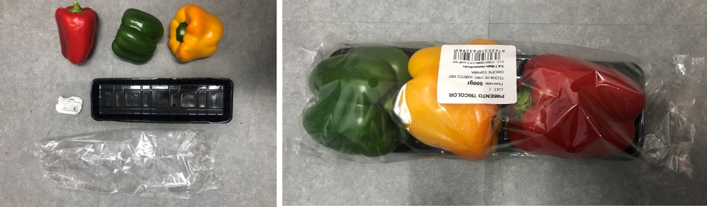

1ST INTERVENTION OF TERM 2
After the first term, I decided to start a new path for interventions, waste in general. And continue in parallel with the path that emerged in the last term, the holistic one.
I don´t know if they will merge in somepoint or they just will complement eachother, or they just will continue different routes.
I am very attracted to the significanse of materials and its bifurcation in physics (measurements, features and properties) and in subjective (senses, messages behind, holistic properties and beyond), because of this, it is relevant to me show experiences colored by that. Developing experiences to think, to question, to observe, to play with, and so on; through the presumption of the spiritual and magic.
INTERVENTION 1- SIDE A: A WASTE DOMESTIC-CONTAINER
ME AS A DESIGN TOOL IN CONTEXT
°°°°°°°°°°°°°°°°°°°°°°Recycling Lifestyle°°°°°°°°°°°°°°°°°°°°°°°°°°°°°°°°°°°°°°°°
°°°°°°°°°°°°°°°°°°°°°°As a designer, I could see the potential of new materials°°°°°°°°°°°°°°°°°°°°
°°°°°°°°°°°°°°°°°°°°°°Document everything with the methods learned and practiced°°°°°°°°°°°°
°°°°°°°°°°°°°°°°°°°°°° Ethnography °°°°°°°°°°°°
°°°°°°°°°°°°°°°°°°°°°° Curiosity, exploration °°°°°°°°°°°°°°°°°°°°°°°°°°°°°°°°°°°°°°°°°°°°°°°°°°°°°°°°°°°°
CONTEXT
I have been segregating some of my food peels, during the last term to see what could I do next, without see it as an opportunity or to document it.
When we were ask to bring some to one of the seminars they worked perfectly, they were a lot and they were desidratated and free of bacterias.
So I restarted again, and, in some point of the last weeks I saw a bunch of carboard boxes with segregated materials in my bedroom, then I thought
that maybe, all of them might need their own organized space in the flat.
The question was what can I do with them?; how much can I still contain in my room?; what if my roommates join?; what if my building join?. what if my some people of my block join?, how is the type of person that could join and why?
In addition, the biomaterials seminars was running and many cool option appeared, and also, projects like "Remix El Barrio" , "Reflow Project" , among others very inspiring that can offer many options and opportunities in this topic, but still many of them continue having problems of how to sustaine theirself economicaly.
In that case, how can I join somehow to that community?, why it is not rentable if it is very attractive for users and governments, where is the segment in which they are struggling to optimize their processes?. what if I offer the waste I collect?, how many of the collected is required to have options of develop "something"?. Because, what I have realized is that what "we" are looking for comercial stores because they already have the same of one product-waste in the same container or bag. Few of them segregate, and also, it is kind of hard because it require time and some requirements. Not to mencionate that it has to be daily, because they occupy space, and probably they smell weird if it is not; unless we find a solution that suits them. As well as, the correct dehidratation of them due to the bacterias.
BOXES AT HOME
A fact of this process is that I am not collecting all of my waste, because of the space, or smells. And another situation is that I´m interested in develop some experiments with some of the waste I collect, but not for every type.

WHAT DO I WASTE (MORE)?
This photos are from food waste. I usually recycle very specific non-biomaterials waste because they require more space. In addition, I collect the seeds of the food to reproduced them in the next season.
Separating every packaging I have realized that many of them are difficult to separate because they are stickers or have joints too attached to each others.
What I waste more are peels and seeds of avocado, eggshell, lemon, orange, chocolate wrappers, plastic containers from yogurt and animals meat, and paper. In less quantity, fruits like mango, papaya, ciruela, mandarina; more types of plastic, some cans and glass.

COMPOST - SOFT COMPOST?
As a part of the last term experimentation, I tried worms compost to improve my abilities of recirculation processes; and also, because I wanted to generate electricity with them, but they died. Apparently, they were changed in their environment many times that they freeze, also, I bought them too soon. One of the reasons to not survive is the food I gave them, they weren't enough decompose.
I will continue this term with the compost having the mentoring of Compost MDEF Project from Emilio and Rei.
An important question that appeared from the compost experience was what if I compost just "somethings" ,to avoid not welcome smells, and with the time lets increasing the ingredientes. It is important to understand how it works, why it can be wet and why it could be wet , and so on. And I want to avoid any weird smell because my roommates are going to be part of the collecting.
WHAT IS THE PLAN?
The plan is to develop a WASTE CONTAINER in my flat which it is going to be separated by types in the way I was doing it, with the option of mutate acording it is been used.
Invite and explain to my 3 roomates how to use the container, and check how they used it and what feedback I have from them.
Check list before start
1. Porous material, like cardboard or clay. Or, other material like plastic or acrilic but with holes.
2. Ventilation, the air has to get IN and OUT of the container.
3. Protection, some of the materials require to be close because they are more vulnerable to bacterias.
4. Divided by size of the waste, and quantity of use.
5. Be aware that some of the materials dripping liquids.
6. Most of them has to be clean.
7. The smallest possible to be accepted in the flat.
8. Some of the peels like oranges smell good, try to put in a specific spot.
9. Have in mind the continuity of use of each material waste.
10.Find where to put them once they space of the waste containter is full. Who is experimenting and working with
these materials.
11. Important: select what materials I can collect.
Test it.
THE INTERVENTION::::: SPOT 1: IN THE FLAT
SHARING WITH FLATMATES
They were already in cardboard, but I will develop in transparent acrilic to let visible what we are collecting, then I think it could be interesting to develop it with the materials I collect.
Once the container is installed; as a daily routine: the WASTE CONTAINER must to be checked and fill the documentation paper check.
The idea of the intervention is to visualize the opportunity of the material to reincarnated in objects for design or art. And generate and engagement
with the people that contribute to collect. And contribute with biomaterial community with the storage and transaccion of the waste.
SELECTED MATERIALS
These are selected because I consume more and by affinity. The sizes are based on my daily aproximated routine, but this has to be up-dated when my flatmates join to the intervention.
DISTRIBUTION OF THE SELECTED MATERIALS
FIRST BOX MODEL
Because of the sizes, weight and structure of the storage, plastic bottles and jars that will contain dried peels are going to be separated of the collecting storage for this stage of the project.
I reused the aluminium containers of food to collect the seeds, and I am going to use the Testing Cointainer Compost from classmates project; and from that increase the storaging according to what I explain before.
ACRILIC STORAGE WITH SMALL/MEDIUM BOXES °°°°°°°°°°°°°°°°°°°°°°°°

ACRILIC STORAGE WITH BIG BOXES °°°°°°°°°°°°°°°°°°°°°°°°

STORAGE IN ACTION°°°°°°°°°°°°°°°°°°°°°°°°

DOCUMENTATION PROCESS

RESULTS
iNITIAL FEEDBACKS
NEXT STEPS
+ Make boxes of two or three cabins to share with people and test if it is handy.
+ Contrast material is think it might be easy to collect according to my experience with materials the users consume.
+ Document the process first week daily, then weekly.
+ Change the materiales to collect.
+ Check the possibility of encrease the box. (it has to be modular and stackable).
+ Find and connect with the projects in the community to give give them the storaged.
WASTE COMMUNITY IN BCN

SOME QUESTIONS ON MIND
+ How can we measure the transaccion?.
At the first stage, it is important to find final receptors of it, but when it increase the transactions might be remunerated through barter.
+ How can more people join? How it could work in my community building?
E X T R A ° FAB ACADEMY CHALLENGE::::: SPOT 2: MDEF CLASSROOM
SHARING WITH CLASSMATES
Two weeks later of starting this intervention, for the FAB ACADEMY CHALLENGE with Julia and Pippa reused the storage from the MDEF Class to generate a similar dynamic explain before, and here emerge the idea of the Website Collectors to stay in communication with the waste community, intervention that we´ll continue in the next weeks.
BEFORE AND AFTER SHELVE
DISTRIBUTION OF THE SELECTED MATERIALS
DRAWBACKS
+ Some people still using the space to put whatever.
+ Mantein it clean and active.
INTERVENTION 1 - SIDE B: HOLISTIC CONNECTION WITH FRUITS
ME AS A DESIGN TOOL IN CONTEXT
°°°°°°°°°°°°°°°°°°°°°°Love to play°°°°°°°°°°°°°°°°°°°°°°°°°°°°°°°°°°°°°°°°°°°°°°°°°°°°°°°°
°°°°°°°°°°°°°°°°°°°°°°Love fruits°°°°°°°°°°°°°°°°°
°°°°°°°°°°°°°°°°°°°°°°Channeling through Akashic Records°°°°°°°°°°°°°°°°°°°°°°°
°°°°°°°°°°°°°°°°°°°°°°Rites °° Rituals °° Offerings °° Balance °°"Pagos a la Tierra" °°°°°
°°°°°°°°°°°°°°°°°°°°°°Document everything with the methods learned and practiced°°°°°°°°°°°°°°°
°°°°°°°°°°°°°°°°°°°°°°Non-language°°°°°°°°°°°°°°°°°°°°°°°°°°°°°°°°°°°°°°°°°°°°°°°°
°°°°°°°°°°°°°°°°°°°°°°STOP YOUR MIND AND FEEL °°°°°°°°°°°°°°°°°°°°°
°°°°°°°°°°°°°°°°°°°°°°Curiosity, exploration °°°°°°°°°°°°°°°°°°°°°°°°°°°°°°°°°°°°°°°°°°°°°°°°°°°°°°°°°°°°
°°°°°°°°°°°°°°°°°°°°°°Phenomelogy°
CONTEXT
After the last term intervention "FIND YOUR SUPERPOWERS IN THE METAVERSE" - The Game of Knowing what your Magic is? I had the sensation of what´s next?, I guess it is because it was the first time I did something with ritual features, holistic an spiritual practices, and what I was looking for was a game, more activity and more movement.
However, what I had realized is that I have to define boundaries, to obtain specific outputs of what I am looking for, (which I don't know yet), but, I have the hint that I must continue in parallel. Because it will emerge or merge with whatever I do in no holistic interventions.
The main objective is to generate a pause, to question yourself and ask yourself how you are managing your abilities, if you are aware of that, if you know how valuable you are and if you knew that your magic is real.
It is a projection game where you transfer your powers to your avatar to see yourself in it and physically place your superpowers channeled from the metaverse through the akashic records.
To land what is receiving from the ether.
Questions like what output can I generate from these expirences? or How can I delimit the projections?because the results were very open and subtle, So I thought that maybe, if I do this intervention with people with the same sensibility and acquainted with extrasensory experiences probably I could change everything or some interesting situations might come out.
BOUNDARIES ---- BEING MORE SPECIFIC
I understood in one comversation with a professor that an avatar could be anything, but, what is that mean? there are plenty of possibilities but with what we can connect fluently to integrate it to a holistic ritual.
Fruits remind us experiences through their smells, consciously or unconsciously, what is the teaching of the fruits that are born from the ancient trees. What are the messages that they have for us to focus in find our superpowers.?
Therefore, I went to the store and pick the fruits with which it resonated, more questions appeared, such as, When we are in the store and see all the types of fruits, why we choose the ones we choose? what if we know that the smell, the taste, the texture, the color and what it reminds us of are messages, or we are very distracted?, nobady teaches us this. I would love to be able to answer this phenomenology after some interventions, and it occurred to me that the holistic tribe could help me disengage these thoughts using their superpowers.

The question was MANGO / MANDARIN / ORANGE / APPLE / PLUM / KIWI / PEAR / BANANA / LEMON / WHAT IS THE MESSAGE THAT YOU HAVE FOR US TO ALIGN WITH OUR SUPERPOWERS?
They answered and with that information I started the intervention once again.
THE INTERVENTION
The invitation was open to people relate to holistic practices, like astrologers, reiki healers, seers, constellators, and one artist.
First, the explanation of the experience, like as I said before, it is a projection game where you embodie your fruit (avatar), at the beginning, you pick your fruit and receive a message with your gift and your talent. After that, you put on your fruit what you want to see on you if the message resonates with you. And share the experience with the group if it is possible.

Later on, each participant, one by one, wears a blindfold and smell the fruit while they are receiving the message. Some of them express their feelings about what they felt.
As a homework, each participant will deepen their connection with the fruit and deliver a series of words, phrases, in general whatever they feels about the shared experience. And explain what is the link with the fruit they embodied.
DOCUMENTATION

DOCUMENTATION OF ONE OF THE PARTICIPANTS
OUTPUTS
WHAT HAPPENED_ PERSONAL REFLECTIONS AND THOUGHTS
How can I document the phenomenology of people sense?
NEXT STEPS
+ If fruits can generate outputs, can it go in the oposite direction and generate new fruits?
+ How can I active this smells or connections with the fruits for my personal benefit.
+ It is essential continue with more interventions and go more deepen.
+ Try to connect each participant non-holistic in the same direction as the holistic ones and generate conections and posible outputs.